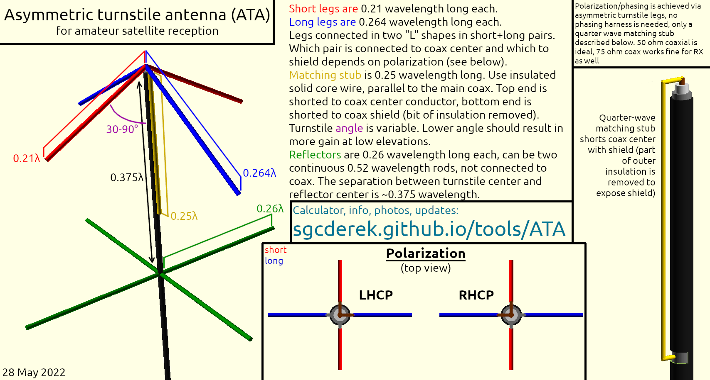
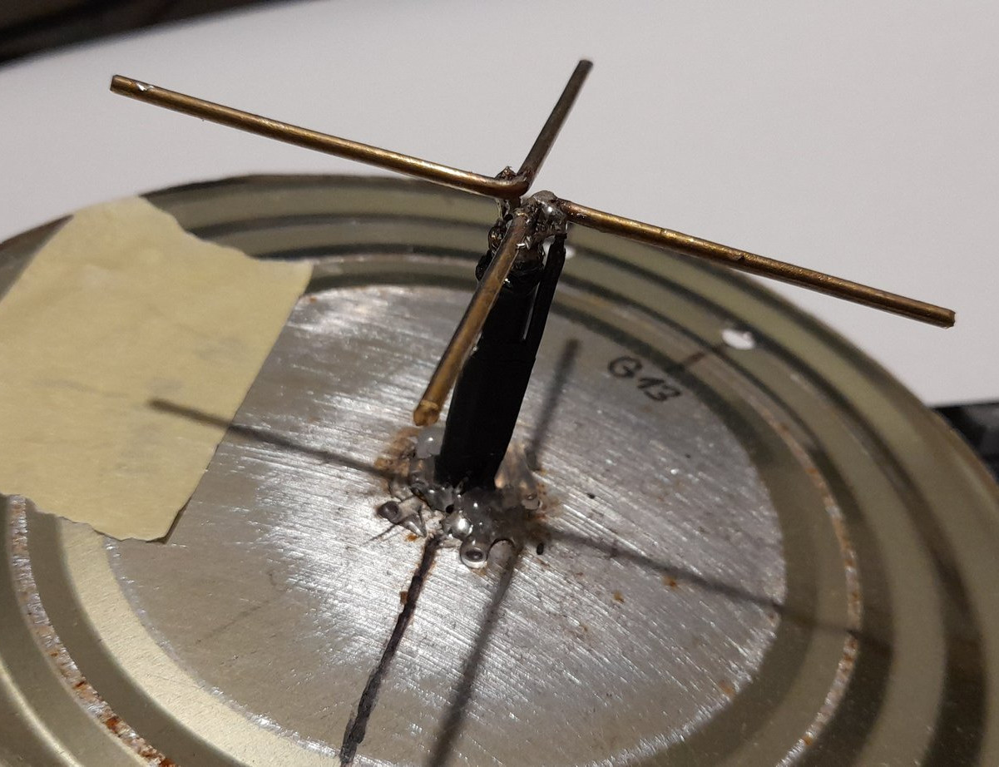
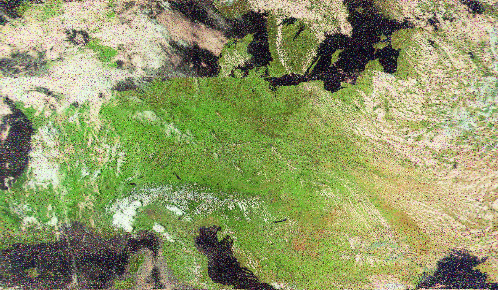
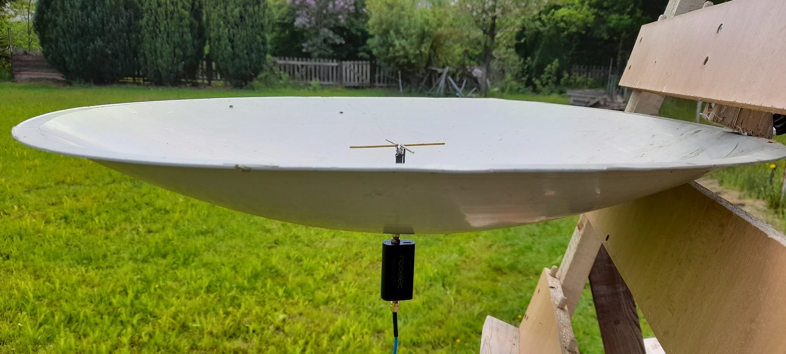
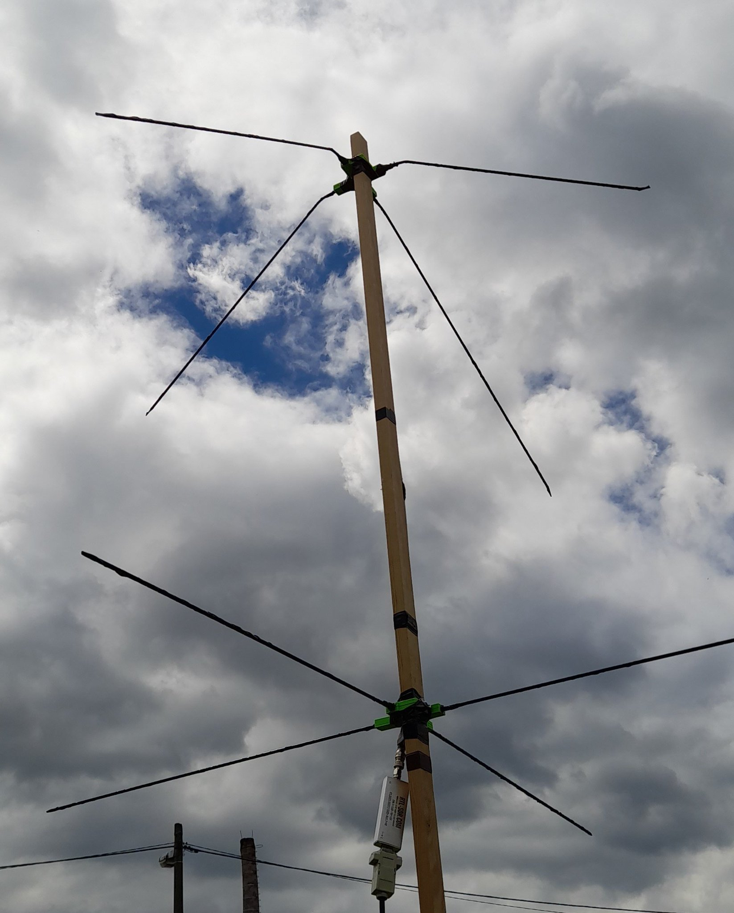
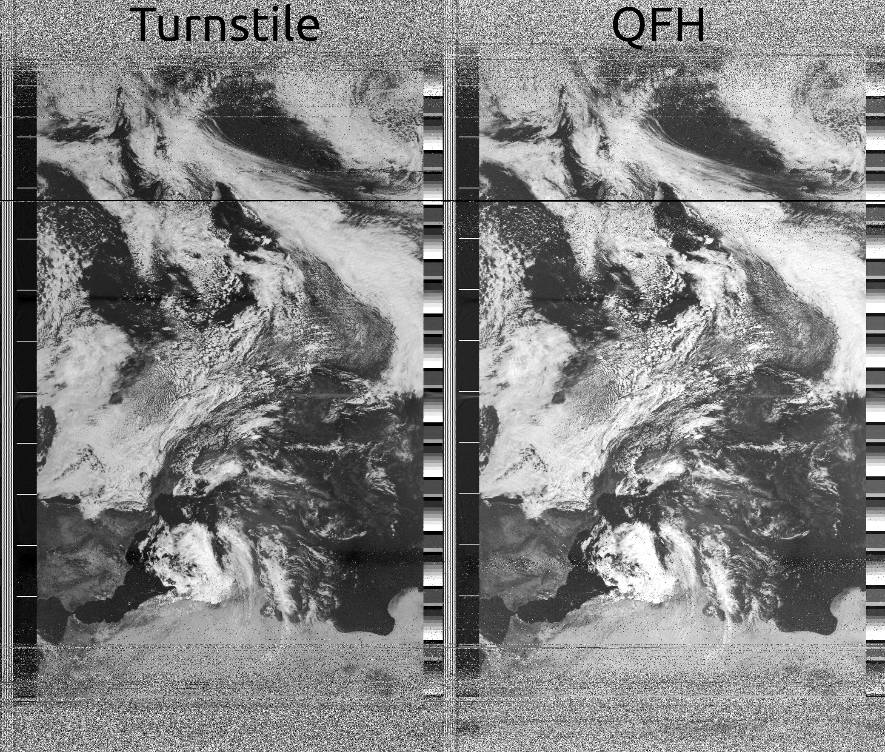
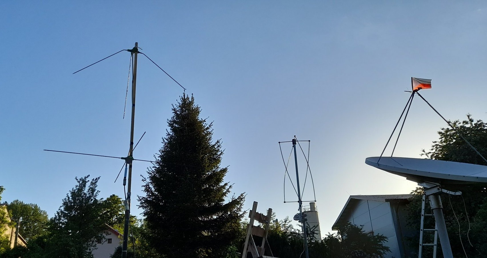

As this antenna hasn't been widely used yet, it is possible that some recommended design specifications might change in the future.

"Leg length" refers to the length of each individual leg section between its outer tip and the center, as is highlighted in the schematic above. Not to be confused with the length across the entire width of the antenna (which would be two legs). Continue reading further down for detailed info about the ATA construction.
The asymmetric turnstile antenna (ATA) for amateur satellite reception is based on a design presented in "Crossed Dipole Antennas - a review" by Son Xuat Ta, Ikmo Park, and Richard W. Ziolkowski. It shows a diagram of a prototype 1.7 GHz LHCP turnstile antenna, where circular polarization is achieved by varying dipole leg lengths. Designs like this appear to be relatively common at higher microwave frequencies, however in my own test a scaled up ATA has proven to be very effective even at 137 MHz, used for weather satellite reception.
The inspiration for building an antenna like this was my interest to find an antenna type that I could safely recommend to people starting out with the hobby of amateur satellite reception, without presenting major construction challenges. As an example, the usual selection of antennas recommended by the community for 137 MHz weather satellite reception are a V-dipole, QFH, DCA, or a normal turnstile. The V-dipole is a very good starter antenna by all means, but it does tend to come with low-gain nulls in its radiation pattern, and does not offer circular polarization. The QFH and DCA antennas can be extremely good, but rely heavily on good construction and phasing, something that may not always be easy to achieve with limited tools. If one is not careful when building those, the end result may be an antenna that "works good enough" but that cost them a disproportionate amount of effort (and in some cases money) to build. The normal turnstile antenna has a simpler construction than a QFH or a DCA, but also relies on a correct phasing harness and an impedance matching network.
The ATA can be viewed as a "hybrid" between a standard turnstile and a QFH; it utilizes two varying length pairs of driven elements like a QFH, while keeping the construction simple like a turnstile (and in my opinion even simpler). In terms of difficulty of construction, I would place the ATA only slightly above a V-dipole. While it does require more material, its construction is very straight-forward and doesn't involve shaping/bending precise curves of a QFH or a more complex phasing network of a DCA.
With all that said though, I should also mention that I haven't really seen antennas like this used much in amateur satellite reception, besides high frequency microwave settings. While my test yielded great results even comparable to a professional QFH antenna, I can not guarantee that you will observe the same results should you decide to build your own ATA, and you may have to do a little bit of experimenting on your own. There are many unpredictable variables such as the effect your selected conductors might have or how much your radiation pattern is shaped by the ground at your location (even things like earth composition and moisture can have an effect, especially when the antenna isn't placed very high). The end result might just be well worth it though.
The construction of the ATA is very simple. It can be divided into three main parts; the driven turnstile element itself, the matching stub (balun), and the reflector. Below you will find a short description of how the antenna is constructed, and what you've already seen above is as an annotated diagram and a calculator to help you quickly determine the ATA dimensions for a given operating frequency.
The driven turnstile element consists of four legs in a "+" shape, with two legs slightly shorter and two slightly longer than 1/4 wavelength. The two long legs are 0.261 wavelength long each, while the short ones are 0.21 wavelength long each. The four legs are connected in two pairs, each pair consisting of one long and one short leg, together electrically forming an "L" shape. One "L" is then shorted to the coax cable center conductor while the other is shorted to the shield. It is important to run the coaxial cable straight down and not have it turn such that it would become parallel in any way to the turnstile, at the very least until it reaches below the reflector, otherwise it could interact with the turnstile as if it was a parasitic element and shape its radiation pattern. The turnstile legs are also angled downwards to broaden the radiation pattern of the antenna and give it more gain when a received satellite is at a lower elevation.
Which pair ("L") of the legs is connected to the center conductor and which to the shield determines the polarization of your ATA. See the construction diagram above. The calculator above also uses a measurement given by the original 1700 MHz turnstile design to calculate an ideal leg conductor diameter; this however does not seem to be critical, though consider it as a guideline when selecting your conductor.
The matching stub should be something like a straight solid core wire, running parallel to the coax, directly next to it, cut exactly 1/4 wavelength long. The top end of this conductor is shorted to the coax center pin (it can be shorted to one of the turnstile legs that are themselves connected to the coax center, in which case it should be as close to the center of the turnstile as possible). The bottom end of the matching stub is shorted to the coax shield. A small piece of the coax insulation is removed at this connection point so the matching stub can be soldered to the shield. Be careful when soldering to the shield, make sure not to overheat the coax as the dielectric insulator inside can easily melt and you could risk having a short circuit.
The reflector is yet another "+" shape, this time composed of four legs of equal lengths of 0.26 wavelength. It can also be just two legs 0.52 wavelength across. It doesn't have to be connected to the coax shield either. The reflector assembly is placed around 0.375 wavelength below the turnstile.
I would recommend starting out with the downwards angle of the turnstile legs being around 45 degrees, while keeping the turnstile-reflector separation 0.375 wavelength. If you notice that your ATA receives strong signal when the satellite is overhead but suffers from a signal dropout at a lower elevation, it likely means that its beam is too narrow. On the other hand, if the signal strength is low over the entire pass, then your ATA's beam may be too wide (though other things could cause such issues in both cases). You might also want to intentionally make the beam of your ATA narrower - for example if there are a lot of obstructions blocking the view of lower elevations (such as trees, buildings, hills, ...) it might be beneficial to focus more of the ATA's gain higher.
To make the beam of the ATA wider, the turnstile angle can be decreased. To make the beam narrower, the angle can be increased up to 90˚, after which point the reflector spacing can be reduced down to 0.25 wavelength if making the turnstile 90° wasn't enough. If you expect to be tweaking the turnstile angle and reflector separation, it may be advantageous to construct your ATA with those dimensions being easily variable.
Following are some example photos of constructed ATAs and also a short description about each. If you build a successful ATA of your own, feel free to post a photo of it online and tag me, I might even include it here so we can have multiple examples of different kinds of the ATA and the way they can be built.

(above) This is my original ATA, built for 1700 MHz using RHC polarization. A circular metal plane is used as the reflector (cut can), the turnstile angle is 90° and the reflector spacing is 0.25wl. You can see the matching stub in the form of a black wire connected to one of the turnstile leg pairs. The other end of the stub is soldered to the reflector, which in this case was shorted to the coax shield. At such small scale, each "L" element is easily made out of a single solid piece of bent wire.
This antenna was tested for "omnidirectional" reception of HRPT, with a limited success (an old dish was used as an extra large reflector, effectively making the antenna mostly directional, though still this was a nice result):



(above) My second ATA, built for 137.5 MHz RHCP. A turnstile angle of around 45˚ is used, and the reflector spacing is standard 0.375wl. Cheap 75 ohm TV coax is used to connect to the turnstile, and the matching stub is a quarter-wave piece of thin solid brass wire (not visible in photo). This antenna was tested against my Winkler QFH for weather satellite APT reception, with the following result;

